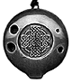
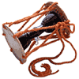
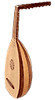

Ocarina : Небольшая флейта округлой формы. Сочный, магический звук инструмента проник в народную музыку всего мира из древних индейских племен Южной Америки.
 Самые ранние "шаровые флейты" были сделаны из глины и им была придана форма небольших животных; некоторые носили на шее в виде украшения. Название было дано инструменту в XIIX веке в Италии, где он был очень популярен, и буквально значит 'гусенок'.Cовременные инструменты имеют от двух до восьми пальцевых отверстий, в качестве материала используется керамика, дерево и пластик; у фабричных окарин - фиксированный строй. В Штатах мода на них возникла в начале столетия в форме sweet potato (картофелина), и в течение Второй Мировой Войны правительством был налажен массовый выпуск пластмассовых окарин для под'ема морального духа своих солдат. Orutu : Однострунная скрипка, на которой играют в западной Кении. Термин также относится к популярному в наше время кенийскому стилю, в котором orutu основной инструмент. |
 Оцудзуми (Okawa) : Традиционный японский ручной барабан, входящий в состав оркестров театра Но и музыки Нагаута. Сделан из двух кусков кожи, стянутых веревками, называемыми сирабэо, вокруг деревянного корпуса в форме песочных часов.Во время представления Но исполнитель сидит на специальной скамейке, в рамках оркестра Нагаута - в традиционной позе на коленях сэйдза. Различают три типа звуков, зависящих от натяжения веревок и силы удара,- чен, цу и дон. Oud (Уд) : Традиционный струнный безладовый инструмент в арабской, турецкой и армянской музыке,  предшественник европейской лютни. Oud был ввезен персами в Аравию в средние века, и проник в Европу через исламскую Испанию.Слово уд буквально означает "дерево". Инструмент сделан из склеенных тонких конических деревянных планок и толщина клея не шире тысячной дюйма. В корпусе три звуковых отверстия. Из 11 струн шесть спаренных и одна басовая. Инструмент обычно держат горизонтально или под наклоном, с корпусом выше головки с колками; только в Испании и Египте на нем играют, как на классической гитаре. |